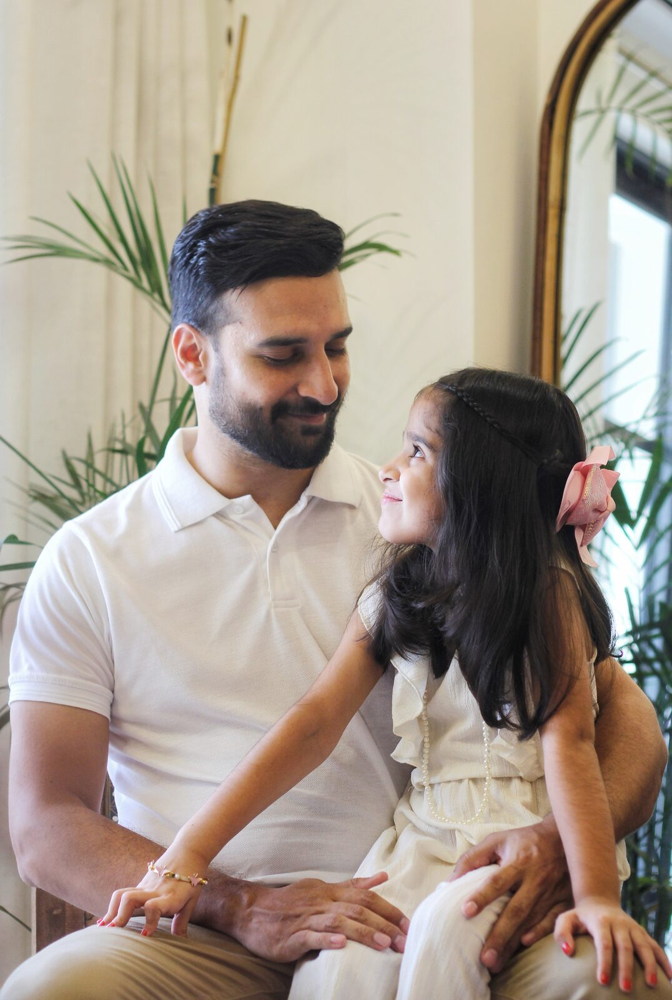

02 · April 2026 · 8 min read
A & R, in a Berkeley
cottage on a Tuesday.
Their cottage smelled of toast and clean sheets. I shot mostly in the kitchen because the kitchen was where they kept laughing. Three frames on this set are already on their fridge.
Read the post